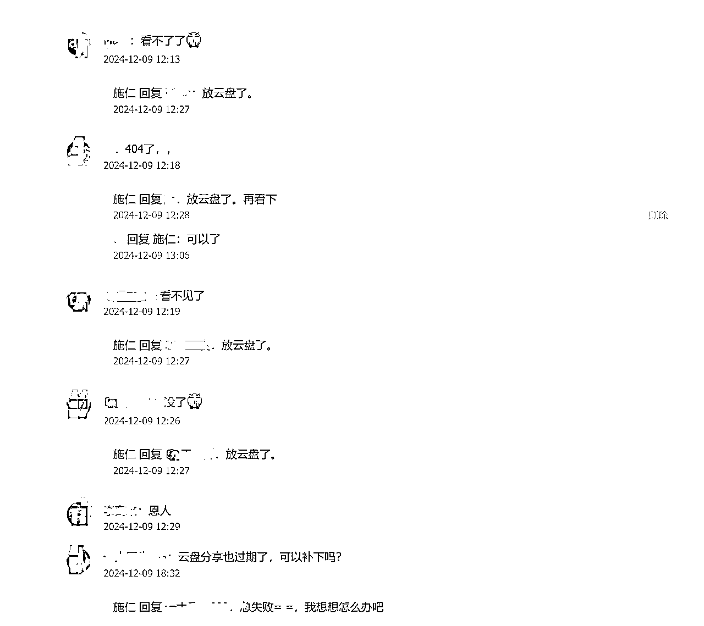

来源：https://udxxg5rx5m.feishu.cn/docx/GtUDdoG2hoPKgwxey1sceqTzn0b
写这篇文章前，有些犹豫，
怕圈友误会我当时分享那篇教程文章的初衷。
但是这个经历实在太有意思了。
最初的动机仅仅是为了帮助自己解决一个问题，
后来觉得很多圈友可能也需要，就花了一两个小时写了一篇搭建教程，
结果两个月后才发现有腾讯云7K多的转账，
受到了很多启发，
所以还是决定分享出来。
2024 年 10 月中旬，我购买了一台 Windows 服务器，
计划利用它搭建一个节点。
但实际操作时困难重重。搜索很多资料后发现，
针对 Windows 服务器的搭建教程少之又少，
即便找到了，按照步骤操作也未必成功。
经过几天搜索，最后找到了一款能够简化操作的工具，成功搭建起了节点。
解决问题后，我突然意识到，这个过程或许并不是每个人都愿意或能够经历。
如果我将教程分享出去，也许能够帮助有相似需求的人，
抱着这样的想法，我动手撰写了一篇详细的教程。
巧的是，当我刚完成教程初稿时，亦仁在生财有术社群里发布了一个主题为“分享实用工具”的龙珠悬赏活动。
这和我的教程内容不谋而合。于是我就投稿到了龙珠悬赏栏目。
教程发布后，不少朋友按照教程尝试，成功搭建了节点。
但与此同时，问题和反馈也接踵而至——有人在搭建过程中遇到各种问题，
我也发现这个教程针对某些网站好像会出一些问题。导致节点连接短暂失败。
为了让教程更加完善，我开始研究更好的搭建方式。
同时借助 GPT ，寻找更加高效的解决方案。
经过不断尝试，我找到了一款更适合的软件，重新修改教程内容发布了2.0版本。
这套新的解决方案完美解决了各种问题。
于是又分享了新的搭建方式，
刚发就很多人关注并且留言。

但是飞书不欢迎这种教程，最后只好改成本地文章放在云盘。
在撰写教程的过程中，有一个步骤是购买服务器。
由于我早年购买服务器需求比较大，注册了一个账号用来推广，
在自己推广账号的链接买服务器会降低我的一些成本。
写教程时便将我的推广链接放进去，
因为链接本身就可以直达购买那个服务器型号的页面。
而且当时的想法也很简单：如果有人通过我的链接购买服务器，
返现不多，能赚个奶茶钱也行。
教程发布后，我也并没有刻意关注推广链接的收益情况。
直到 12 月底，我偶然发现微信公众号银行卡里多了一笔收入并且金额不小。
点进去看到是腾讯云打款。当时很懵。
我就登录腾讯云后台查看，才发现从 10 月开始，这笔收益就开始持续累积了。
因为当时那个月在忙着得物，所以根本没有注意。
而这时我才意识到，这个教程似乎无意间成为了一条被动收益来源。
从目前账单看收益累计已经有一万多了。只不过他这个打款都是次月月底到账。
其实我完全可以不把这件事“戳破”，
但我觉得这个经历实在太有意思了，
远比这笔收益本身更有意义。
一定要把你认为好的东西分享出来。
如果对别人也有用，会有人感谢你。
如果对别人没用，也会有人拿出比你的分享更有价值的东西让你学习。
你还可以链接到更多人。
所以一定要把“自己”分享出去，
而你收获的价值会以各种意想不到的方式再反哺回来。
记得生财里看到过一句话，
大致意思是，
『分享里藏着很多钱』，
现在回头看这句话才是不一样的感受。